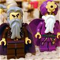
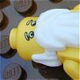

|
|
|
Numbers 20 |
 (20:1) "The desert of Zin" (20:1) "The desert of Zin"
Where did Moses get water from a rock?

Moses and Aaron Doomed
|
| 20:1
Then came the children of Israel, even the whole congregation, into the
desert of Zin in the first month: and the people abode in Kadesh; and Miriam
died there, and was buried there.
|
| 20:2
And there was no water for the congregation: and they gathered themselves
together against Moses and against Aaron.
|
| 20:3
And the people chode with Moses, and spake, saying, Would God that we had
died when our brethren died before the LORD!
|
| 20:4
And why have ye brought up the congregation of the LORD into this
wilderness, that we and our cattle should die there?
|
| 20:5
And wherefore have ye made us to come up out of Egypt, to bring us in unto
this evil place? it is no place of seed, or of figs, or of vines, or of
pomegranates; neither is there any water to drink. |
|
| 20:6
And Moses and Aaron went from the presence of the assembly unto the door
of the tabernacle of the congregation, and they fell upon their faces: and
the glory of the LORD appeared unto them. |
 (20:6) "And they fell upon their faces: and
the glory of the LORD appeared unto them." (FOF) (20:6) "And they fell upon their faces: and
the glory of the LORD appeared unto them." (FOF)
|
| 20:7
And the LORD spake unto Moses, saying, |
|
| 20:8
Take the rod, and gather thou the assembly together, thou, and Aaron thy
brother, and speak ye unto the rock before their eyes; and it shall give
forth his water, and thou shalt bring forth to them water out of the rock:
so thou shalt give the congregation and their beasts drink. |
(20:7-8) "And the LORD spake unto Moses, saying ... Speak ye unto the rock."
How did God tell Moses to get water from a rock?
|
| 20:9
And Moses took the rod from before the LORD, as he commanded him.
|
| 20:10
And Moses and Aaron gathered the congregation together before the rock,
and he said unto them, Hear now, ye rebels; must we fetch you water out of
this rock? |
(20:11) "With his rod he smote the rock twice: and the water came out."
Moses hits a rock with his rod and Presto!
-- water comes out.
 (20:12) "Because ye believed me not ... ye shall not
bring this congregation into the land which I have given them."
(20:12) "Because ye believed me not ... ye shall not
bring this congregation into the land which I have given them."
Moses is punished for hitting the rock with his staff (like he did before
in Exodus 17:6) to get water, rather than just speaking to the rock (as
God asked him to do this time). For messing up the magic trick, Moses will never get to the promised land.
|
| 20:11
And Moses lifted up his hand, and with
his rod he smote the rock twice: and the water came
out abundantly, and the congregation drank, and their beasts also.
|
| 20:12
And the LORD spake unto Moses and Aaron, Because ye believed me not, to
sanctify me in the eyes of the children of Israel, therefore ye shall not
bring this congregation into the land which I have given them.
|
| 20:13
This is the water of Meribah; because the children of Israel strove with
the LORD, and he was sanctified in them.
|
| 20:14
And Moses sent messengers from Kadesh unto the king of Edom, Thus saith
thy brother Israel, Thou knowest all the travail that hath befallen us: |
Not Through Edom
|
| 20:15
How our fathers went down into Egypt, and we have dwelt in Egypt a long
time; and the Egyptians vexed us, and our fathers:
|
| 20:16
And when we cried unto the LORD, he heard our voice, and sent an angel,
and hath brought us forth out of Egypt: and, behold, we are in Kadesh, a
city in the uttermost of thy border: |
|
| 20:17
Let us pass, I pray thee, through thy country: we will not pass through
the fields, or through the vineyards, neither will we drink of the water of
the wells: we will go by the king's high way, we will not turn to the right
hand nor to the left, until we have passed thy borders. |
|
| 20:18
And Edom said unto him, Thou shalt not pass by me, lest I come out against
thee with the sword. |
|
| 20:19
And the children of Israel said unto him, We will go by the high way: and
if I and my cattle drink of thy water, then I will pay for it: I will only,
without doing anything else, go through on my feet. |
|
| 20:20
And he said, Thou shalt not go through. And Edom came out against him with
much people, and with a strong hand. |
|
| 20:21
Thus Edom refused to give Israel passage through his border: wherefore
Israel turned away from him. |
|
| 20:22
And the children of Israel, even the whole congregation, journeyed from
Kadesh, and came unto mount Hor. |

Aaron Dies
|
| 20:23
And the LORD spake unto Moses and Aaron in mount Hor, by the coast of the
land of Edom, saying,
|
| 20:24
Aaron shall be gathered unto his people: for he shall not enter into the
land which I have given unto the children of Israel, because ye rebelled
against my word at the water of Meribah.
|
| 20:25
Take Aaron and Eleazar his son, and bring them up unto mount Hor: |
|
| 20:26
And strip Aaron of his garments, and put them upon Eleazar his son: and
Aaron shall be gathered unto his people, and shall die there. |
|
| 20:27
And Moses did as the LORD commanded: and they went up into mount Hor in the sight
of all the congregation. |
(20:27-28)
"They went up into mount Hor ... and Aaron died there in the top of the mount."
Where did Aaron die?
|
| 20:28
And Moses stripped Aaron of his garments, and put them upon Eleazar his
son; and Aaron died
there in the top of the mount: and Moses and Eleazar came down from
the mount.
|
| 20:29
And when all the congregation saw that Aaron was dead, they mourned for
Aaron thirty days, even all the house of Israel. |
|
|